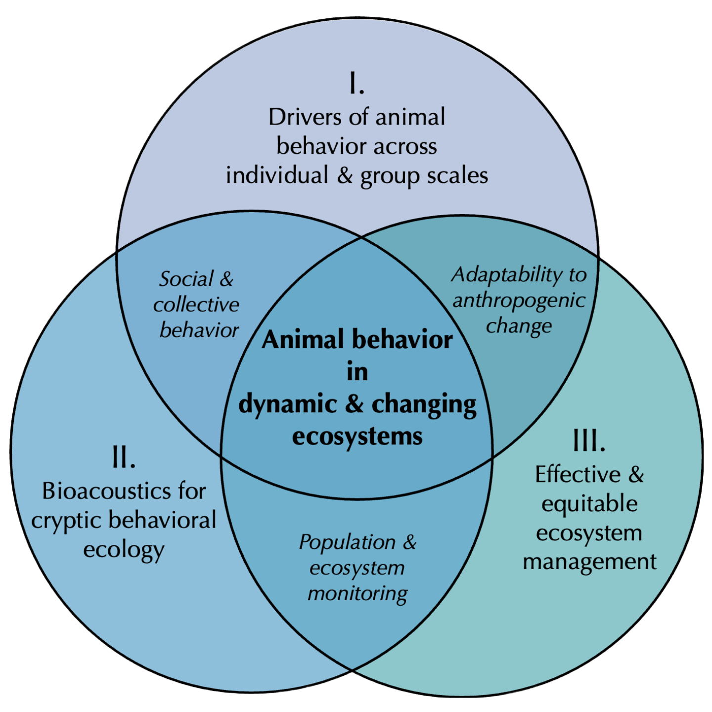
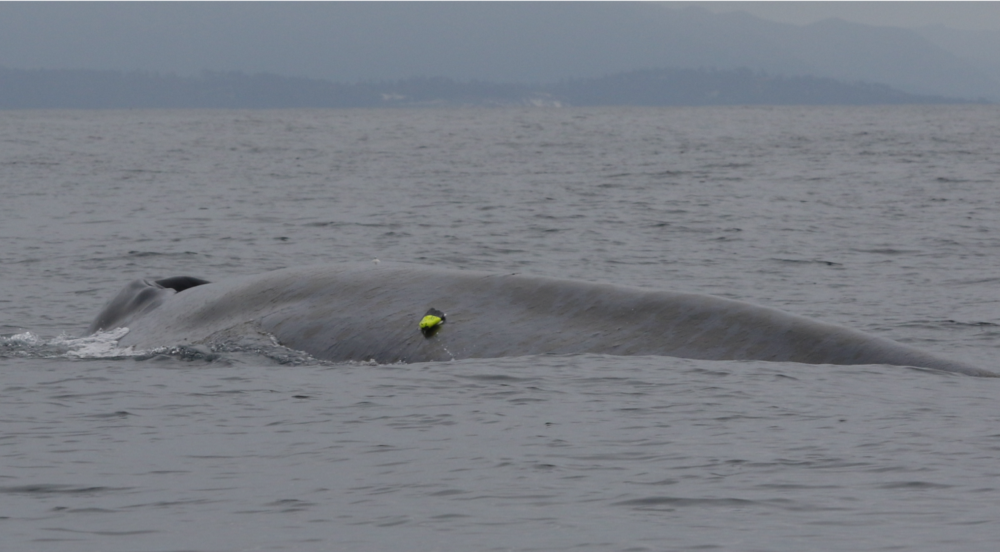
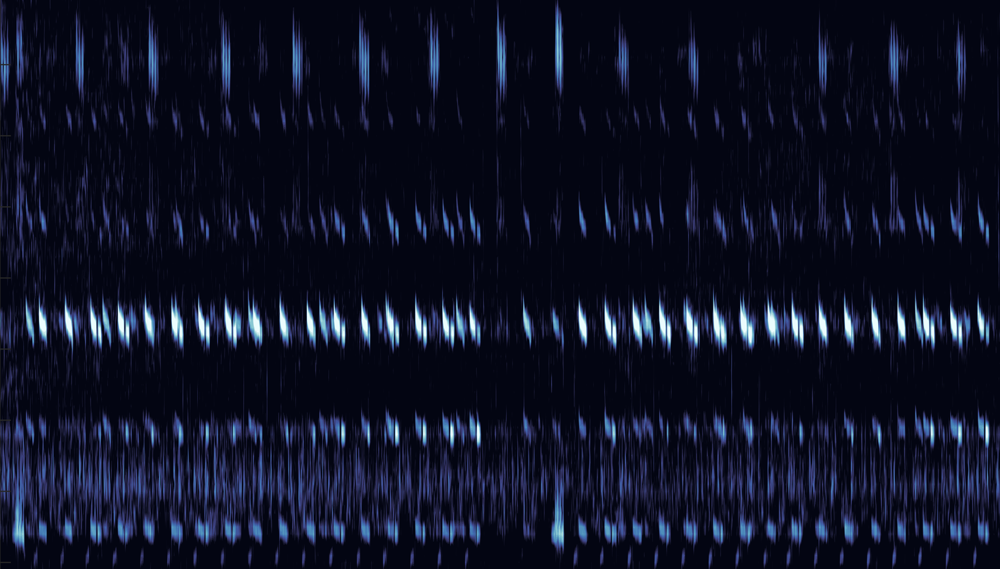

Research
My research program addresses three (often overlapping) themes centered on the study of animal behavior in dynamic & changing ecosystems:

I. Drivers of animal behavior across individual & group scales
 A blue whale with a bio-logging tag attached to record its vocalizations, foraging behavior, and movements. In combination with passive acoustic monitoring approaches (see below), this can be a powerful tool for understanding the foraging and migration strategies of blue whale individuals and groups. Photo taken under NMFS Permit 16111.
Animals’ decisions often depend not only on individually-sensed information from the environment, but also socially-shared information from conspecifics. I explore how this link between individual and group-level behavior influences animals’ ability to find food, avoid predators, migrate, and reproduce in dynamic and rapidly-changing ecosystems. In this work, I am particularly drawn to migratory marine animals which must cope with the extreme dynamism, patchiness, and scale of oceanic ecosystems.
Select relevant publications:
Oestreich, WK, Aiu, KMˆ, Crowder, LB, McKenna, MF, Berdahl, AM, & Abrahms, B. The influence of social cues on timing of animal migrations. Nature Ecology and Evolution. ˆundergraduate mentee
Oestreich, WK, Abrahms, B, McKenna, MF, Goldbogen, JA, Crowder, LB, and Ryan, JP (2022). Acoustic signature reveals blue whales tune life history transitions to oceanographic conditions. Functional Ecology 36, 882-895.
Ryan, JP, Benoit-Bird, K, Oestreich, WK, et al (2022). Oceanic giants dance to atmospheric rhythms: Ephemeral wind-driven resource tracking by blue whales. Ecology Letters 25, 2435-2447.
II. Bioacoustics for cryptic behavioral ecology
 A visual representation (spectrogram) of ~30 minutes of audio recording from MBARI’s MARS hydrophone, showing overlapping blue and fin whale songs. These songs encode remarkable behavioral information, making their detection useful to whales, researchers, and managers of the ecosystems these animals inhabit.
Bioacoustic approaches provide a unique opportunity to (1) quantify and link individual, group, and population-level behaviors; and (2) effectively sample enormous spatial areas from a single instrument in ecosystems that often pose challenges to behavioral observation (e.g., oceanic ecosystems, terrestrial ecosystems at night). In my research, I leverage and develop bioacoustic tools for the advancement of both fundamental behavioral ecology and ecosystem monitoring. While much of my work to date in this area utilizes passive acoustics (listening for vocal animals using microphones), I increasingly use active acoustics (i.e., echosounders) to measure the behavior of non-vocal animals (e.g., krill).
Select relevant publications:
Oestreich, WK, Fahlbusch, JA, Cade, DE, Calambokidis, J, Margolina, T, Joseph, J, Friedlaender, AS, McKenna, MF, Stimpert, AK, Southall, BL, Goldbogen, JA, and Ryan, JP. (2020). Animal-borne metrics enable acoustic detection of blue whale migration. Current Biology 30, 4773-4779.
Pearson, E*ˆ, Oestreich, WK*, Ryan, JP, Haver, SM, Gedamke, J, Dziak, RP, and Wall, CC. Widespread passive acoustic monitoring reveals spatio-temporal patterns of blue and fin whale song vocalizations in the Northeast Pacific Ocean. Frontiers in Remote Sensing (in press). *co-first authorship; ˆundergraduate mentee
Cade, DE, Fahlbusch, JA, Oestreich, WK, Ryan, J, Calambokidis, J, Findlay, KP, Friedlaender, AS, Hazen, EL, Seakamela, SM, and Goldbogen, JA (2021). Social exploitation of extensive, ephemeral, environmentally controlled prey patches by super-groups of rorqual whales. Animal Behaviour 182, 251-266.
III. Effective & equitable natural resource management
 The Southern California Bight, photographed from Santa Barbara Island. This ocean area, adjacent to the largest port on the U.S. West Coast, supports a remarkable abundance and diversity of both wildlife populations and human uses of marine ecosystems.
The Southern California Bight, photographed from Santa Barbara Island. This ocean area, adjacent to the largest port on the U.S. West Coast, supports a remarkable abundance and diversity of both wildlife populations and human uses of marine ecosystems.
Ecosystem processes, wildlife populations, and human resource users are all inherently dynamic. In recent years, dynamic management approaches (i.e., flexible in space and time and often facilitated by advances in technology) have emerged as a means of more efficiently managing ecosystems for the protection of wildlife alongside human activities. My research in this area explores the development of tools for observing wildlife populations in near-real-time, while also critically considering novel issues of equity and ethics arising from this shift to technology-driven resource management.
Select relevant publications:
Chapman, MS*, Oestreich, WK*, Frawley, TH, Boettiger, C, Diver, S, Santos, BS, Scoville, C, Armstrong, K, Blondin, H, Chand, K, Haulsee, DE, Knight, CJ, and Crowder, LB. (2021). Promoting equity in the use of algorithms for high seas conservation. One Earth 4, 790-794. *co-first authorship
Oestreich, WK, Chapman, MS, and Crowder, LB. (2020). A comparative analysis of dynamic management in marine and terrestrial systems. Frontiers in Ecology and the Environment 18, 496-504.
Green, KM, Selgrath, JS, Frawley, TH, Oestreich, WK, Mansfield, EJ, Urteaga, J, Swanson, SS, Santana, FS, Green, SJ, Naggea, J, and Crowder, LB. (2021). How adaptive capacity shapes the Adapt, React, Cope Response to climate impacts: insights from small-scale fisheries. Climatic Change 164, 1-22.
- Posted on:
- January 1, 0001
- Length:
- 4 minute read, 755 words
- See Also: